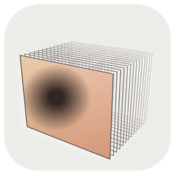

The last frames of your video are stacked front to back into a cube: the front face is now, the back face is a moment ago. Turn it and the sides show time as streaks. Give a video AI depth (Depth, in the panel) and every frame becomes a relief of the scene; with Layout: Camera path, each frame goes where the camera was. In Track, find something (type it, or click it) and follow it through the video. What the AI sees describes the video and answers questions about a moment.